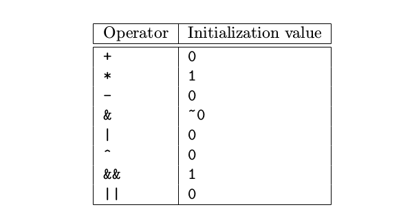

更多指令和子句
指令
flush
flush指令主要用于处理内存一致性问题. 每个处理器(processor)都有自己的本地(local)存储单元:寄存器和缓存, 当一个线程更新了共享变量之后, 新的值会首先存储到寄存器中, 然后更新到本地缓存中. 这些更新并非立刻就可以被其他线程得知, 因此在其它处理器中运行的线程不能访问这些存储单元. 如果一个线程不知道这些更新而使用共享变量的旧值就行运算, 就可能会得到错误的结果. 通过使用flush指令, 可以保证线程读取到的共享变量的最新值. 下面是语法形式:
#pragma omp flush[(list)]
list指定需要flush的共享变量, 如果不指定list, 将flush作用于所有的共享变量. 在下面的几个位置已经隐式的添加了不指定list的flush指令.
- 所有隐式和显式的路障(barrier)
- Entry to and exit from critical regions
- Entry to and exit from lock routines
threadprivate
threadprivate作用于全局变量, 用来指定该全局变量被各个线程各自复制一份私有的拷贝, 即各个线程具有各自私有、线程范围内的全局对象, 语法形式如下:
#pragma omp threadprivate(list)
其与private不同的时, threadprivate变量是存储在heap或者Thread local storage当中, 可以跨并行域访问, 而private绝大多数情况是存储在stack中, 只在当前并行域中访问, 下面是一个使用示例:
int counter;
#pragma omp threadprivate(counter)
void test_threadprivate() {
#pragma omp parallel
{
counter = omp_get_thread_num();
printf("1: thread %d : counter is %d\n", omp_get_thread_num(), counter);
}
printf("\n");
#pragma omp parallel
{
printf("2: thread %d : counter is %d\n", omp_get_thread_num(), counter);
}
}
下面是输出结果
1: thread 3 : counter is 3
1: thread 0 : counter is 0
1: thread 2 : counter is 2
1: thread 1 : counter is 1
2: thread 2 : counter is 2
2: thread 0 : counter is 0
2: thread 3 : counter is 3
2: thread 1 : counter is 1
从输出结果我们可以看到, 在第二个并行域中, counter保存了在第一个并行域中的值. 如果要使两个并行域之间可以共享threadprivate变量的值, 需要满足以下几个条件:
- 任意一个并行域都不能嵌套在其他并行域中(Neither parallel region is nested inside another explicit parallel region.)
- 执行两个并行域的线程数量要相同(The number of threads used to execute both parallel regions is the same.)
- 执行两个并行域时的线程亲和度策略要相同( The thread affinity policies used to execute both parallel regions are the same.)
- 在进入并行域之前dyn-var变量的值必须为false(0). (The value of the dyn-var internal control variable in the enclosing task region is false at entry to both parallel regions.)
子句
if
用来控制并行域是串行执行还是并行执行, 只能作用于paralle指令, 下面是其语法形式:
#pragma omp parallel if(scalar-logical-expression)
如果if的判断条件为true, 则并行执行, 否则串行执行, 下面是一个使用示例
void test_if() {
int n = 1, tid;
printf("n = 1\n");
#pragma omp parallel if(n>5) default(none) \
private(tid) shared(n)
{
tid = omp_get_thread_num();
printf("thread %d is running\n", tid);
}
printf("\n");
n = 10;
printf("n = 10\n");
#pragma omp parallel if(n>5) default(none) \
private(tid) shared(n)
{
tid = omp_get_thread_num();
printf("thread %d is running\n", tid);
}
}
输出结果如下
n = 1
thread 0 is running
n = 10
thread 0 is running
thread 2 is running
thread 3 is running
thread 1 is running
reduction
如果利用循环, 将某项计算的所有结果进行求和(或者减、乘等其他操作)得出一个数值, 这在并行计算中十分常见, 通常将其称为规约. OpenMP提供了reduction子句由于规约操作, 其语法形式为
reduction(operator:list)
下面是一个使用实例:
void test_reduction() {
int sum, i;
int n = 100;
int a[n];
for(i = 0; i < n; i++) {
a[i] = i;
}
#pragma omp parallel for default(none) \
private(i) shared(a,n) reduction(+:sum)
for(i = 0; i < n; i++) {
sum += a[i];
}
printf("sum is %d\n", sum);
}
使用规约子句之后, 无需再对sum进行保护, 下面是reduction支持的操作符以及变量的初值  在使用乘法时发现其初始值同样为0, 可能和具体的实现有关.
copyin
将主线程中threadprivate变量的值复制到执行并行域的各个线程的threadprivate变量中, 作为各线程中threadprivate变量的初始值. 作用于parallel指令, 下面是一个使用示例:
int counter = 10;
#pragma omp threadprivate(counter)
void test_copyin() {
printf("counter is %d\n", counter);
#pragma omp parallel copyin(counter)
{
counter = omp_get_thread_num() + counter + 1;
printf(" thread %d : counter is %d\n", omp_get_thread_num(), counter);
}
printf("counter is %d\n", counter);
}
下面是输出结果:
counter is 10
thread 0 : counter is 11
thread 2 : counter is 13
thread 3 : counter is 14
thread 1 : counter is 12
counter is 11
copyprivate
将一个线程私有变量的值广播到执行同一并行域的其他线程. 只能作用于single指令, 下面是一个使用示例:
int counter = 10;
#pragma omp threadprivate(counter)
void test_copyprivate() {
int i;
#pragma omp parallel private(i)
{
#pragma omp single copyprivate(i, counter)
{
i = 50;
counter = 100;
printf("thread %d execute single\n", omp_get_thread_num());
}
printf("thread %d: i is %d and counter is %d\n",omp_get_thread_num(), i, counter);
}
}
下面是程序运行结果:
thread 3 execute single
thread 2: i is 50 and counter is 100
thread 3: i is 50 and counter is 100
thread 0: i is 50 and counter is 100
thread 1: i is 50 and counter is 100
下面是将copyprivate(i, counter)去掉的运行结果
thread 0 execute single
thread 2: i is 0 and counter is 10
thread 0: i is 50 and counter is 100
thread 3: i is 0 and counter is 10
thread 1: i is 32750 and counter is 10